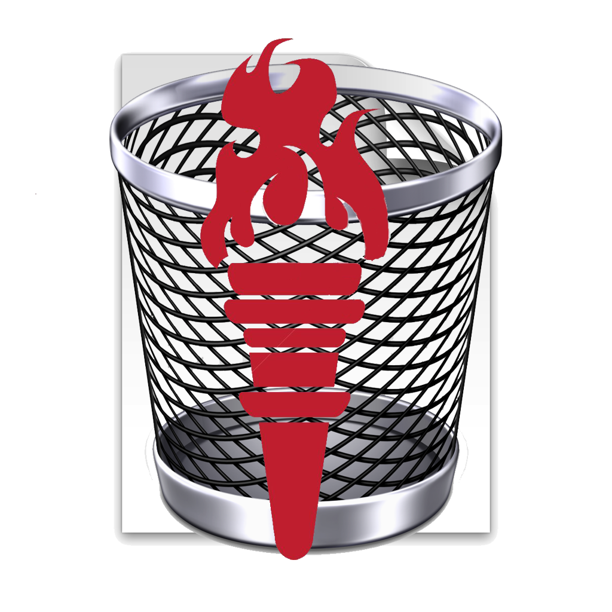

Incinerator
Your own personal black hole is here.
Incinerator 1.2 is here, and it's packed with the features that you've all been waiting for, like the ability to incinerate folders, applications, and even the Trash. Plus, it's full of bug fixes and improvements to make your experience even more pleasant.
or View on iTunes.Want to try the latest and greatest version of Incinerator? Download the 1.2.1 beta version!
Incinerator is an app that securely erases files from your hard drive with extreme prejudice. It is capable of obliterating pretty much any file in its way - and yours.
Why Incinerator?
When you normally erase a file on your Mac, more often than not, the file can still be retrieved. Using professional software, even amateur computer users can find potentially dangerous information on your hard drive, such as sensitive documnts, bills, etc. This is because when you erase a file, the file does not "disappear": the operating system simply marks the data as no longer being used, but the data still remains and is accessible until another file is created that writes over the data that previously was there. This means that special software can hunt for these unused data sections and restore them into files. The following video* demonstrates exactly how easy this is:
Because of this threat, it is vital that you write over sensitive files before erasing them, so that anybody who tries to access your hard drive and recover the files will find random data, and not anything potentially sensitive. Incinerator can do this job, and it is available on the Mac App Store totally, 100% free.
Features:
- Scaleable Destruction - Have the program write over your file one time, or a thousand.
- Notifications - Incinerator fully integrates into your OS X desktop, even sending you notifications when your file has been incinerated.
- Super Secure
- On the App Store - Incinerator is available on the Mac App Store, so you have full confidence in knowing that it has been approved by the makers of OS X itself - the ultimate seal of Mac compatibility.
- Sandboxed - A new technology, sandboxing allows each app on your Mac to play nicely together, preventing them from doing rogue things like erasing all of your files. Incinerator only has access to the files you open, giving you a sigh of relief.
- Signed - The official version of Incinerator is signed by my developer ID issued by Apple. This means it runs without warning on your Mac, with the understanding that if something goes wrong, Apple can pull the certificate, preventing the app from running.
- Compatible with all New Macs - Yes, that new MacBook Air you bought can run Incinerator. :)
Need help? Don't hesitate to contact me. I can be reached through GitHub, or you can email me.
* - This video and its mentioned commercial software is included as a demonstration to demonstrate the necessity of the product advertised on this page. Its use does not constitute an endorsement of the product contained therein, and I cannot be held resposnsible for any damages that it may incur.